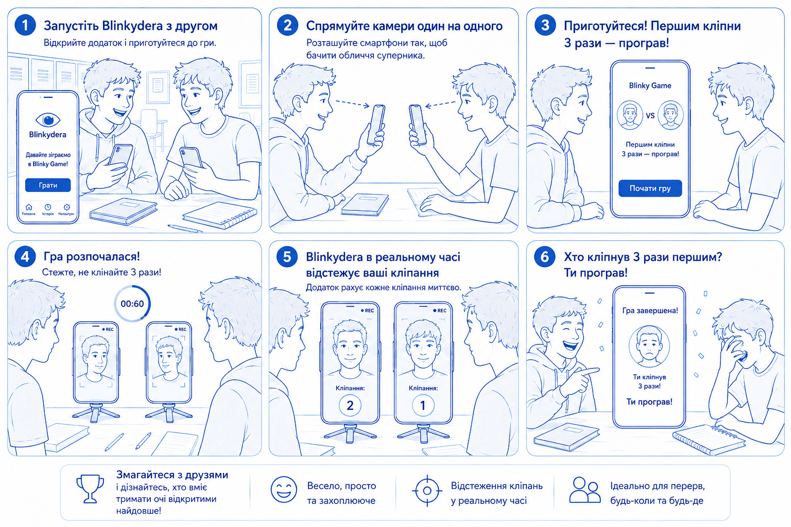
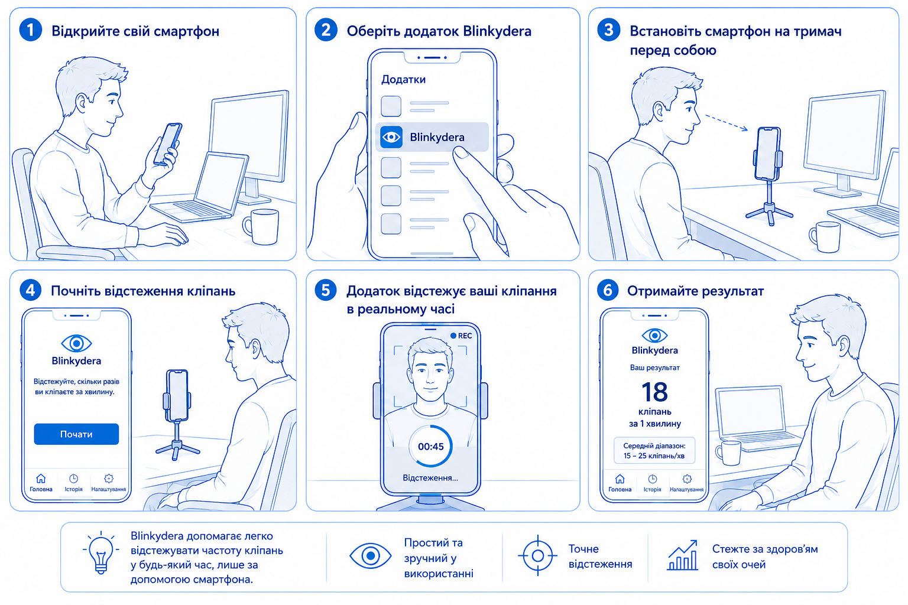
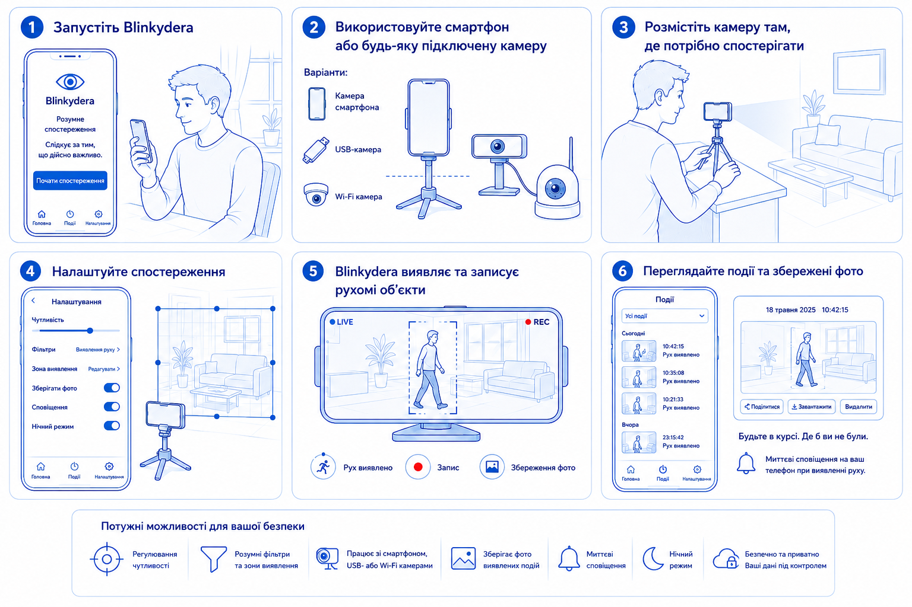

Ваш персональний трекер здоров’я очей і руху
Ласкаво просимо до Blinkydera! Цей застосунок допоможе вам стежити за здоров’ям очей, контролювати свої звички щодо моргання та навіть працювати як інструмент для інтелектуального виявлення руху.
Перевірте свою концентрацію та витривалість!

У режимі Blinky завдання просте: як довго ви зможете тримати очі відкритими? Застосунок відстежує ваші моргання в реальному часі. Якщо ви моргнете занадто багато разів, гра завершується, а її тривалість зберігається. Це веселий спосіб краще усвідомити свої природні звички щодо моргання.
Контролюйте цифрове навантаження на очі.

Сучасний час перед екраном може значно зменшувати частоту моргання, що призводить до сухості та втоми очей. Наш режим здоров’я проводить 60-секундну оцінку частоти вашого моргання. Після тесту ви отримаєте персоналізовані рекомендації на основі результатів, які допоможуть підтримувати оптимальне зволоження та здоров’я очей.
Перетворіть свій пристрій на інтелектуальний інструмент спостереження.

Режим детектива leverages advanced computer vision to track motion. Whether you're monitoring a room or experimenting with tracking algorithms, this mode gives you full control. You can adjust sensitivity and choose from multiple tracking algorithms:
Blinkydera створено з урахуванням конфіденційності. Уся обробка зображень і аналіз обличчя виконуються локально на вашому пристрої. Відео або дані про обличчя ніколи не завантажуються в хмару.